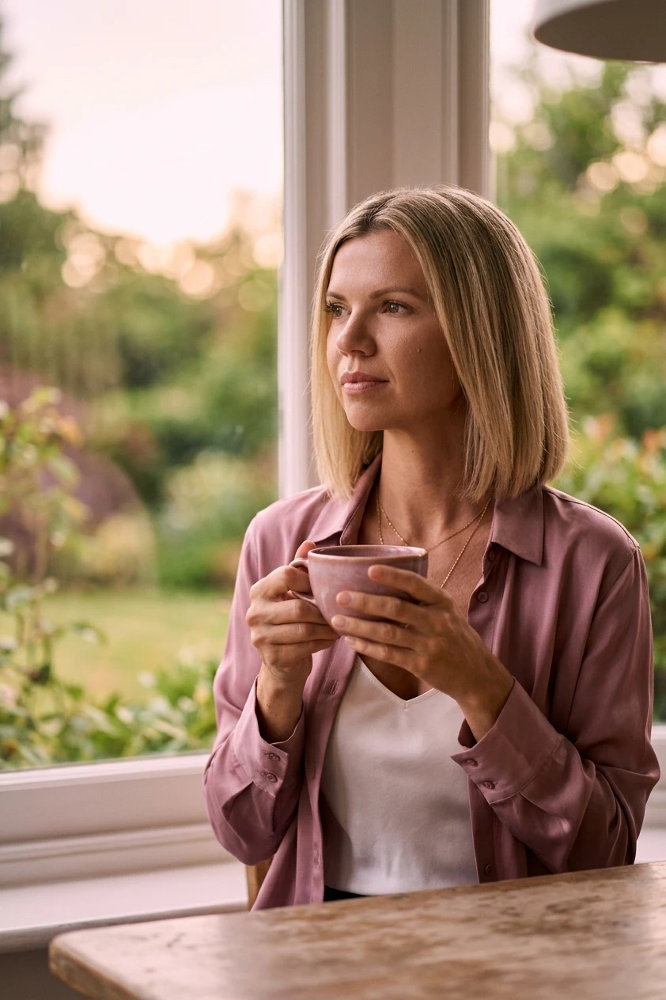
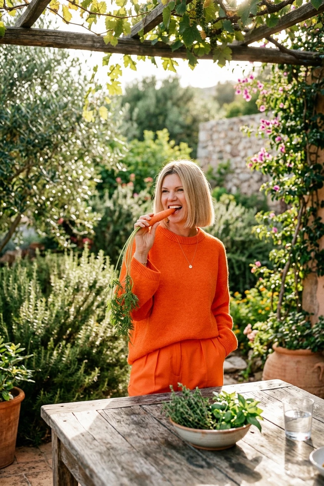

Vorwort
Die Leidenschaft für das Kochen begleitet mich schon mein ganzes Leben.
Für mich war es immer weit mehr als die Zubereitung einer Mahlzeit. Kochen ist eine Form der Liebe und Fürsorge, eine Möglichkeit, Menschen zusammenzubringen, ihnen etwas Gutes zu tun und besondere Momente zu schaffen.

Auch mein beruflicher Weg führte mich zunächst in die Welt der Hotellerie und Gastronomie, in der ich meine Begeisterung für gutes Essen, Genuss und Gastlichkeit vertiefen konnte.
Mit den Jahren wuchs in mir der Wunsch, meine eigenen kulinarischen Ideen zu verwirklichen. Ich begann, Rezepte zu entwickeln, mit Aromen, Texturen und Farben zu spielen und die Schönheit selbst unscheinbarer Lebensmittel zu entdecken. Aus dieser Leidenschaft entstand schließlich auch meine Liebe zur Food-Fotografie. Sie eröffnete mir eine weitere Möglichkeit, meine Begeisterung für gutes Essen mit anderen zu teilen und Genuss über Bilder beinahe spürbar werden zu lassen.

Lange Zeit waren es vor allem der Geschmack, die Sinnlichkeit und die Ästhetik, die mich an Lebensmitteln faszinierten.
Doch irgendwann begann ich, mich intensiver mit dem auseinanderzusetzen, was sich unseren Sinnen entzieht: mit der Wirkung von Lebensmitteln auf unseren Körper und dem besonderen Potenzial, das in ihrem Zusammenspiel liegt.
Ein persönlicher gesundheitlicher Wendepunkt hat dieser Perspektive schließlich eine ganz neue Tiefe gegeben.
Mir wurde bewusst,
wie wenig selbstverständlich Gesundheit ist.
Wie wertvoll es ist, einen Körper zu haben, der uns durch das Leben trägt. Einen Körper, dem wir oft erst dann unsere volle Aufmerksamkeit schenken, wenn er sie einfordert.
Seitdem bedeutet Ernährung für mich etwas anderes.
Sie ist keine Form der Kontrolle, kein Streben nach Perfektion und schon gar kein Verzicht auf Genuss. Sie ist eine der Möglichkeiten, die wir jeden Tag haben, um unseren Körper bewusst zu unterstützen.
Dabei interessiert mich nicht nur das einzelne Lebensmittel, sondern vor allem das Zusammenspiel. Wie wir Zutaten kombinieren, wie wir sie zubereiten und wie aus einer Mahlzeit mehr werden kann als die Summe ihrer Bestandteile.

„Denn satt zu sein bedeutet nicht automatisch, gut versorgt zu sein.“
Genau aus diesem Gedanken
ist diese Rezeptedition entstanden.
Ich möchte dir nicht einfach zeigen, was du kochen kannst. Ich möchte dir vermitteln, warum ich bestimmte Lebensmittel miteinander kombiniere, was sie ernährungsphysiologisch wertvoll macht und wie du dieses Wissen ganz selbstverständlich in deinen Alltag integrieren kannst.
Diese erste Edition trägt den Namen Wärme. Sie steht für die Schönheit der kalten Jahreszeit, für intensive Farben, tiefe Aromen und für jene Momente, in denen Essen nicht nur den Körper nährt, sondern auch etwas in uns berührt.
Ich wünsche mir, dass dieses Buch ein Ort wird, an den du immer wieder gerne zurückkehrst. Zum Entdecken, zum Kochen, zum Verstehen und zum Genießen.
Vielleicht ist bewusste Ernährung am Ende nichts anderes
als eine Liebeserklärung an den eigenen Körper.
Eat smart. Age slow.
Martina Caldi